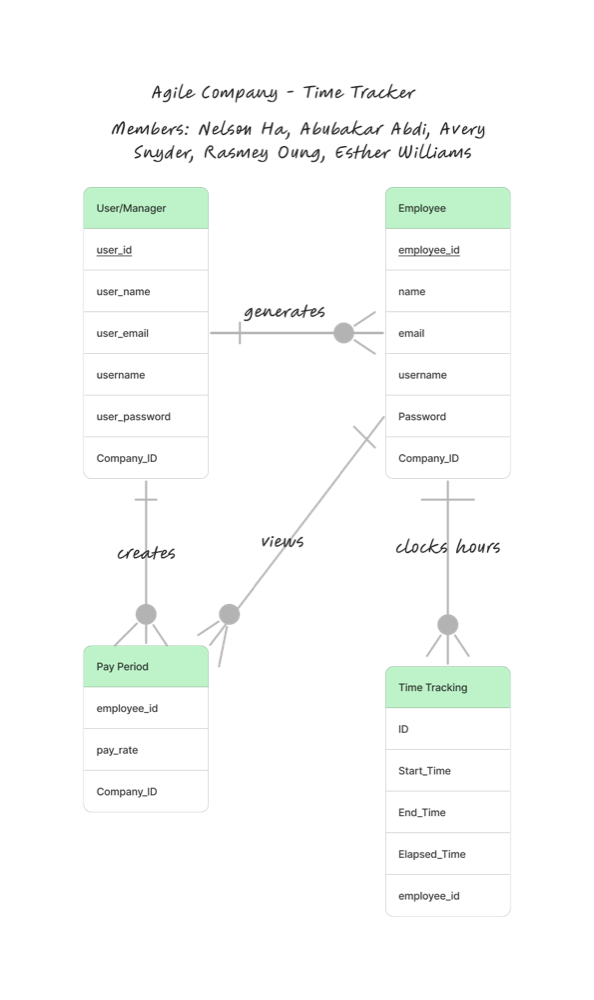

About Agile Company Time Tracker
Time Tracker was our group project for a Software Engineering class. We set out to build a time clock for small businesses. A manager signs up their company and creates accounts for their employees. Employees clock in and out, and the manager can see everyone's hours, post announcements and work out payroll for any pay period.
It was my first time working with PHP and MySQL. I worked mostly on the backend: the database, logins and sessions, the clock-in and clock-out system, and the payroll queries. It's where I first learned how a web app fits together, from an HTML form to a PHP script to a SQL query and back to the page.
What it does
For managers
- Company sign-up. One manager account per company.
- Employee accounts. The manager enters a name and email; the app generates a username and a temporary password.
- Employee timesheets. Pick any employee and see every shift they've clocked.
- Pay rates. Set or update each employee's hourly pay in one table.
- Pay period reports. Choose an employee and a date range to get their hours and total pay.
- Announcements. Write a message, confirm it, and give it an expiration date.
For employees
- Time punch. Clock in and out with one button.
- Timesheet. Every shift with the date, time in, time out and hours worked.
- Dashboard. Current wage, hours worked in the past 7 days and the latest announcement.
- Pay check. See hours and pay for any date range.
- Account. Change the temporary password after the first login.
How the backend worked
Every page was a PHP file rendered on the server. Logins, sign-ups and account creation followed a small object-oriented pattern, with each step in its own file:
- Form
login.php - Handler
includes/login.inc.php - Validation
LoginContr - SQL
Login - Connection
Dbh(PDO) - DatabaseMySQL
Safe queries
Every query went through PDO prepared statements, so user input never became part of the SQL itself.
Hashed passwords
Passwords were stored with password_hash() and checked with password_verify(), never as plain text.
Two kinds of accounts
Managers and employees lived in separate tables and logged in separately. The PHP session decided which menus and pages you could see.
Clocking in and out
Clocking in inserted a row stamped with NOW(). Clocking out filled in the end time and worked out the shift length with TIMESTAMPDIFF. If the session was lost mid-shift, the app found the open shift and closed that one.
Payroll
A pay report added up the seconds worked in the date range, rounded down to whole hours, and multiplied by the employee's hourly rate.
Time zones
The browser sent its UTC offset to set_timezone.php so times showed in the employee's own time zone.
How the database worked
A MySQL database with five tables, managed through phpMyAdmin. Each company is tied together by its company name and each employee by their username.
users
Managers / business owners
- users_id (PK)
- users_name
- users_email
- users_uid
- users_pwd (hashed)
- users_company
employee
Accounts created by a manager
- employees_id (PK)
- employees_name
- employees_email
- employees_uid
- employees_pwd (hashed)
- employees_company
payroll
Each employee's hourly rate
- employees_uid
- employees_company
- pay_amount
time_tracking
One row per shift
- id (PK)
- start_time
- end_time
- elapsed_time (seconds)
- username
announcements
Messages from the manager
- id (PK)
- announcement_text
- date_posted
- expiration_date
Trigger: new_employee_trigger
Whenever a new employee was inserted, MySQL automatically created their payroll row with a pay rate of 0, so every employee always had one.
Event: Delete Announcements
A scheduled MySQL event ran once a week and deleted announcements whose expiration date had passed.
How we planned it

Since this was a Software Engineering class, we planned the app before we built it. We drew an ERD for the database, wrote use cases with sequence diagrams for flows like creating an employee account and clocking in, and designed every screen as a wireframe in Figma alongside the test scenarios we'd use to check it.
Built with
- PHP
- MySQL / MariaDB
- PDO
- phpMyAdmin
- XAMPP
- HTML
- CSS / SCSS
- JavaScript
- Figma
- Git & GitHub
Where it is today
The original needs a PHP server and a MySQL database, so this version is a static demo. Every page is recreated in JavaScript, and the same five tables live in your browser's storage, filled with a sample company. Nothing is sent anywhere. The original PHP and SQL are still in the repo, unchanged.